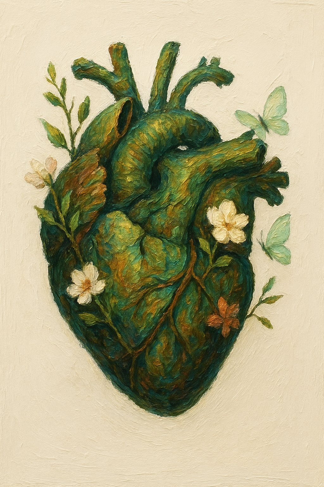

Mi historia · Mi camino
Karla
Moraga
Mi camino profesional nace, profundamente, de mi propio proceso de sanación.
Sé que el dolor
no tiene
la última palabra
Soy sobreviviente de abuso sexual infantil y he recorrido un camino profundo de sanación del trauma complejo, la codependencia y la reconexión conmigo misma.
Desde esa experiencia, sé que el dolor no tiene la última palabra y que, incluso después de las heridas más profundas, es posible volver a la vida, al cuerpo y a una forma más auténtica de habitarse.
Es descubrir quién eres más allá de la herida."
Y también me ha enseñado algo importante: no romantizo el dolor ni la sanación. Sanar duele. A veces la vida se pone cuesta arriba. Requiere valentía, sostén y un acompañamiento adecuado.
Pero también sé, desde la experiencia y desde mi trabajo, que sí es posible.
La sabiduría del cuerpo
Nuestro cuerpo guarda memoria de lo vivido, pero también guarda recursos profundamente sabios para sanar. Contamos con herramientas que nos pertenecen desde el origen, inscritas en nuestra propia biología: la capacidad de regularnos, de encontrar apoyo, de volver al presente y de reconstruir seguridad desde dentro.
Hoy acompaño a otras mujeres desde un lugar profundamente humano, integrando tanto la experiencia vivida como una mirada terapéutica y somática que reconoce la sabiduría del cuerpo, la historia emocional y la capacidad real de transformación.
Creo profundamente que hay vida después de la herida. Que es posible volver a sentir seguridad, construir vínculos más sanos, recuperar la voz propia y reencontrarse con una forma más libre, auténtica y amorosa de vivir.
"Hay vida después de la herida. Y el cuerpo sabe el camino de vuelta."
regularse, sanar y reconstruir seguridad
De dónde nace este trabajo
Mi trabajo nace
desde ahí
Es posible volver a sentir seguridad, construir vínculos más sanos, recuperar la voz propia y reencontrarse con una forma más libre, auténtica y amorosa de vivir.
Mi trabajo nace desde la experiencia, la conciencia y la esperanza.
¿Quieres saber cómo trabajo?
Conocer mi enfoque